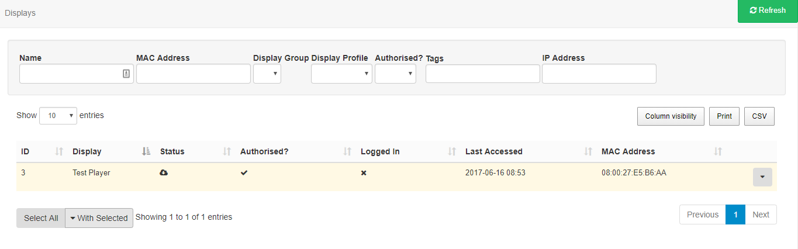
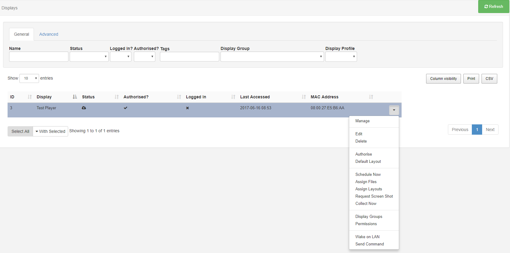
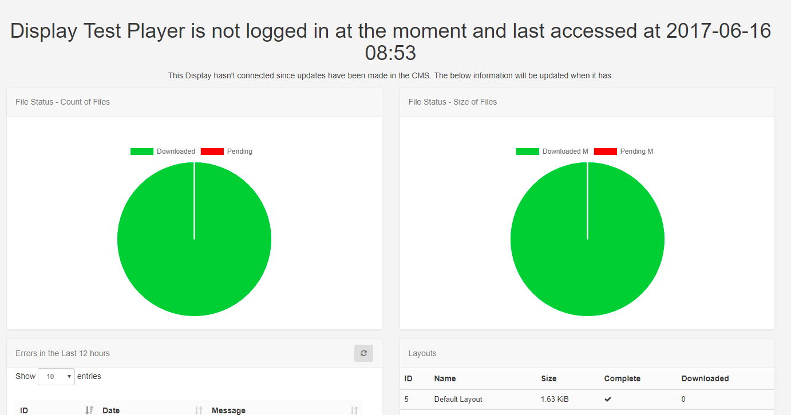
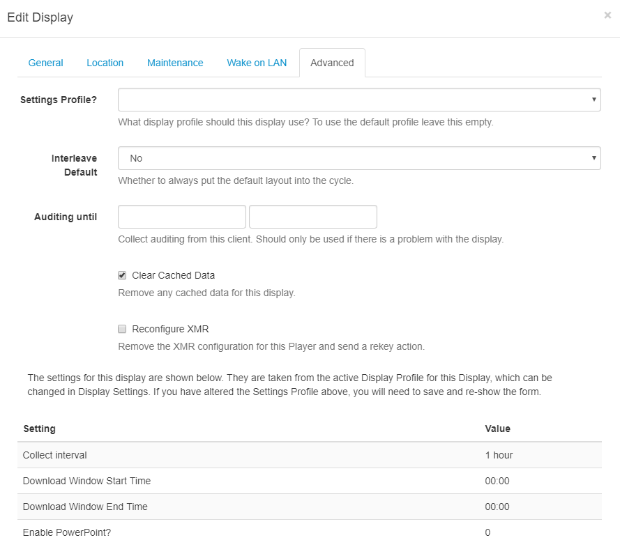
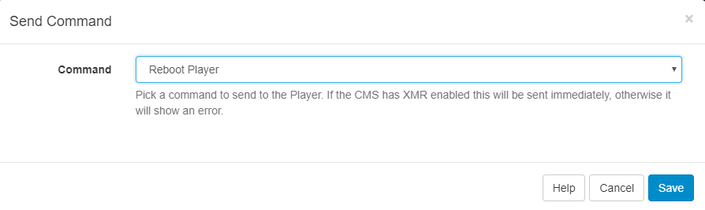

Displays
The primary purpose of SFC Technology is to show content on screens with the entire application suite existing for that one purpose. SFC Technology provides a concept called Displays to manage when and how content is shown on a screen.
When no other content is Scheduled, Displays will always show a Default Layout. You can create your own Default Layout to replace the existing one to show.
Displays are uniquely identified by a hardware key which is generated when the Signage Player software is installed. This hardware key is used to create a Display record in the CMS and is unique to that one Display record.
Connecting a Display
Displays connect to the CMS over an API called "XMDS" . Each Signage Player software application will have its own method of registering and connecting to the CMS - most of them only require the URL and CMS Key.
New Displays will need to be marked as authorised before they can be sent any content. This can be done by using the row menu for the Display and clicking Authorise.
Display Administration
Displays are administered from the Menu, with logged in Users able to view the status of Displays that they have been assigned permission for.

ID
Used for internal identification of the display.
Display
Name given to the Display for easy identification purposes (this is not shown on the Display itself).
Status
Tick = Player is up to date (this may also show as green in colour).
Cloud icon = Player has not logged in with content waiting to be downloaded (this may also show as amber in colour, as displayed in the example image above).
Cross = Player is currently downloading new content and has yet to complete (this may also show as red in colour).
Authorised
Tick or cross to indicate whether the Display has been granted a licence with the CMS. This prevents unauthorised Displays being added to the CMS.
Logged In
Tick or cross to show if the Display has logged in recently.
Last Accessed
Date and time stamp of when the Display was last accessed.
MAC Address
Media Access Control Address of the Display (if the client software is capable of sending it).
Columns can be toggled on and off to show the information you would like to display for administration purposes by clicking on the Column visibility button.
Row Menu
Each Display has a row menu containing a number of actions that can be performed against them such as;

Manage
Each Display has its own Dashboard which shows the Displays current status, bandwidth usage, file status and errors.

This Dashboard is useful as a first step for troubleshooting issues with a Display.
Edit
Configure options specific to that Display with the 'Advanced' tab, which lists the general settings applied from the selected Settings Profile.

Delete
Deleting a Display will remove it from the CMS entirely - this operation cannot be reversed. A deleted Display can be reconnected to the CMS by repeating the “Register” procedure which will create a new unique Display record.
Deauthorise a Display instead of deleting so that it can be re-authorised at a later date if needed. Use the row menu for the Display and click on Authorise to toggle to Deauthorise. This can also be actioned from the Edit Display form by selecting No for Authorise display.
Send Command
The Send Command functionality is executed via XMR to Players by selecting a predefined command. This is useful for sending Players 'Reboot' commands for example.

Administrators create predefined commands for use, therefore if you require additional commands, please contact your Administrator.
This type of Command can also be executed by scheduling a Command Event